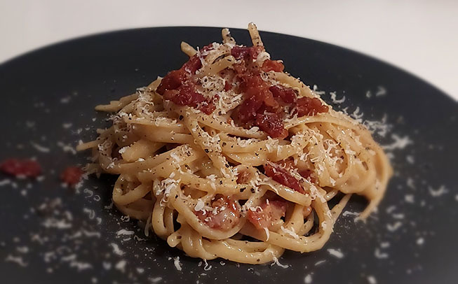

Fettuccine a la carbonara
Ingredienser
2 pers.
| 200 g | Fettuccine |
| 100-200 g | Bacon i tern |
| 2 | Æg |
| En god håndfuld | Grana padano |
| En god håndfuld | Pecorino romano |
| Friskkværnet peber |
Fremgangsmåde
- Steg bacon sprødt på en pande ved middelvarme, og sæt til siden
- Imens baconen er på panden, koges pastaen i godt saltet vand i ca. 10 minutter, til den er al dente
- Imens pastaen koger, rives grana og pecorino fint
- Æg piskes sammen i en skål, enten med piskeris eller gaffel, til det er ensartet
- Når pastaen er al dente hældes vandet fra, og gryden med pasta sættes til afkøling i et lille minut på en kold kogeplade
- Rør imens grana, pecorino og en masse friskkværnet peber sammen med æggene, til det er en lidt tyk masse
- Når pastaen har stået et lille minuts tid, blandes æggemassen og bacon (gerne også lidt af baconfedtet) godt sammen med pastaen
Retten kan med fordel toppes med lidt revet granaost og friskkværnet peber
- Velbekomme